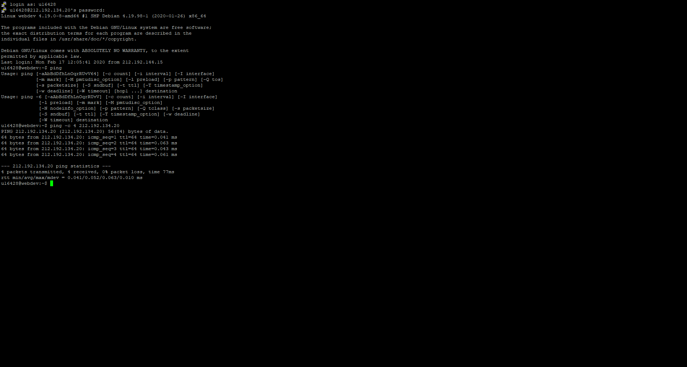
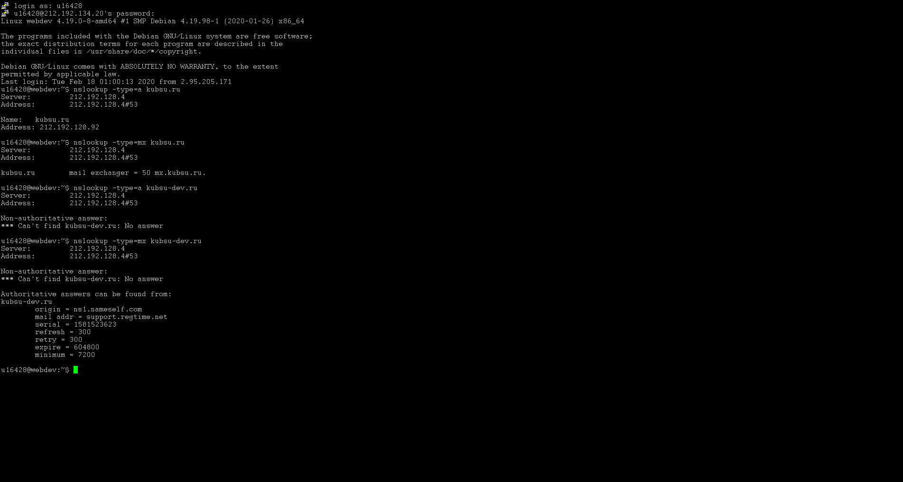
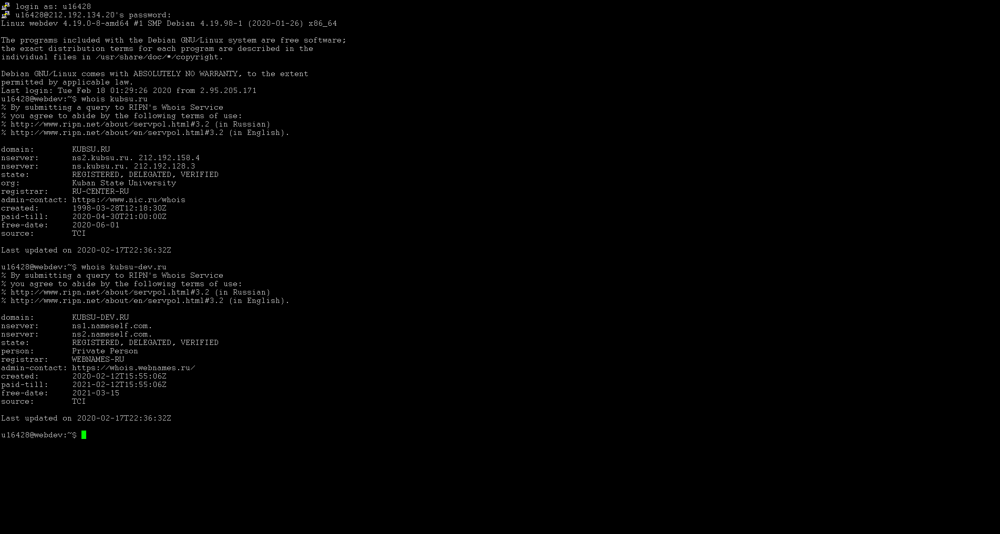

Задание 1
1) Взять у преподавателя практики ваш логин и пароль доступа к учебному серверу 212.192.134.20 (kubsu-dev.ru). Подключиться к нему по SSH с помощью клиента Putty, команды ssh или онлайн-версии ssh-клиента.
2) С помощью команды ping на учебном сервере узнать IP-адрес веб-сервера kubsu.ru, сделать скриншот вызова команды ping, добавить скриншот в git-репозиторий задания.

3) С помощью команды nslookup узнать A-записи и MX-записи домена kubsu.ru и kubsu-dev.ru, добавить скриншоты в git-репозиторий задания.

4) С помощью команды whois узнать дату регистрации домена kubsu.ru и kubsudev.ru, добавить скриншоты в git-репозиторий задания.

5) Сделать веб-страницу index.html со скриншотами, добавить ее в git, с помощью SSH склонировать репозиторий со скриншотами и страницей в каталог /var/www/html/ ваш_логин/. Веб-страница должна открываться по адресу http://ваш_логин.kubsudev.ru/каталог_задания_1/.